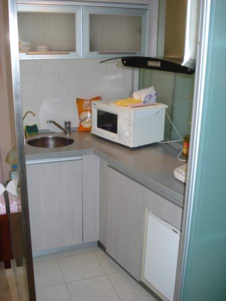
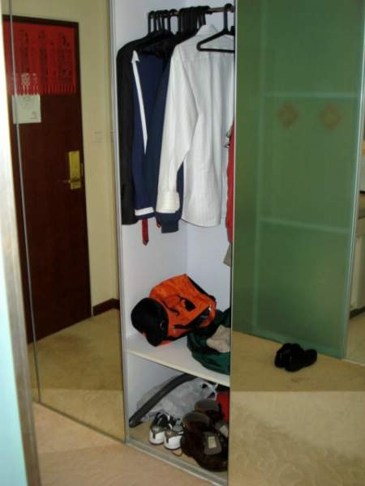
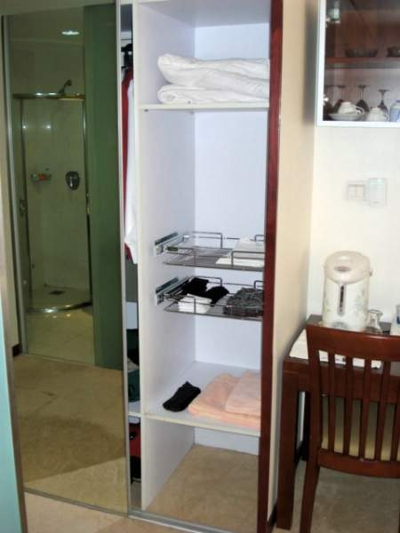

(continuation)
| Home Sweet Home (continuation) |
||||||||||||||||||||||||
| GO TO PAGE 3 OF 4 | BACK TO DATE PAGE | |||||||||||||||||||||||
|  | ||||||||||||||||||||||||
| I cook supper for myself every evening I spend at home. I'm fortunate that my wife and the Chinese English teachers who stayed at our home taught me how to use a wok, because that is my primary culinary tool. If course, it's great to have a microwave for popcorn. And the small refrigerator you can see in the lower right corner of the picture is plenty adequate. The sink has two spigots--one for filtered, | ||||||||||||||||||||||||
| reputedly drinkable water, but I start with that and boil it anyway. Then I pour that boiled water into the jar pot on the table and boil it one more time before I use it for my morning mocca mud. | ||||||||||||||||||||||||
|  | ||||||||||||||||||||||||
|  | ||||||||||||||||||||||||
| Turn around from the kitchen and there are two closets with mirrored sliding doors. | ||||||||||||||||||||||||
| And there's my jar pot for boiling water on the far right on the table. | ||||||||||||||||||||||||
| GO TO PAGE 3 OF 4 | ||||||||||||||||||||||||
| BACK TO DATE PAGE | ||||||||||||||||||||||||